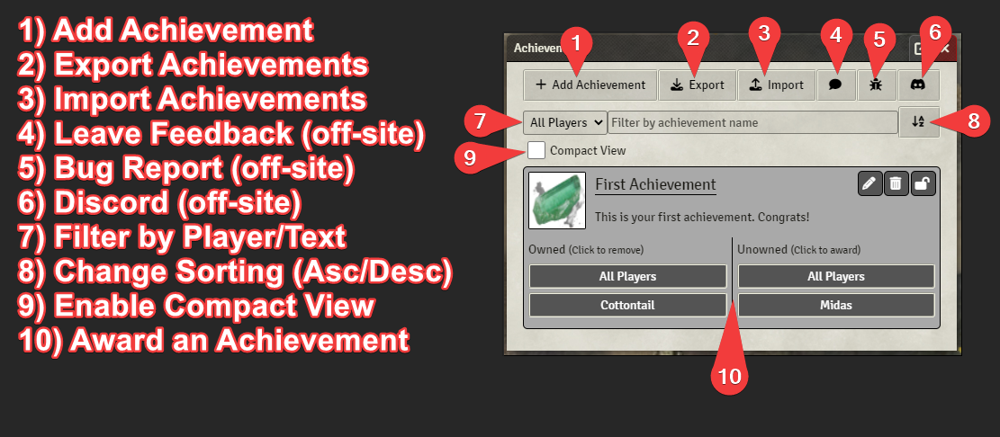

Player Achievements - A FoundryVTT module
This module provides GMs with a way to award players with achievements.


Upcoming Changes
1.5.0
Features
- ‘Online Players’ added to dropdown filter of achievements window. (7a83b28), closes #57
- added Players to the Actor dropdown filter. Selecting one will show all achievements from all characters a player has ownership of (ead3cd2)
- clipboard icon added to achievement titles for quick copying the achievement id to clipboard (47cb06b)
- new achievements have a unique id auto-generated by default (e97415d)
- player sound volume now controlled via UI volume slider (607e46f)
- renamed instances of Player to Actor to better clairfy intention (2b65a22)
- the default sound of all achievements can be set via the settings (4aea7e7)
Links
| Upcoming Changes | API Documentation |
|---|---|
| Link | Link |
Features
Developers
- Provides an API documented in API.md
- Provides hooks for after achievement award/unaward.
GMs
- Create your own achievements.
- Add tags to achievements for easier display filtering.
- Choose to show or hide tags when players view achievements.
- Assign/Unassign achievements to/from players.
- Award achievements to players that are offline and they will recieve them when they next login.
- Customize sound played per achievement.
- Choose to cloak all unearned achievements details from players.
- Choose to allow cloaked achievements to show title on a per achievement basis.
- Choose an image to show when an achievement is cloaked.
- Choose to hide all unearned achievements from players.
- Show achievement earn message to all players or only receiving player.
- Backup achievement data to clipboard as JSON.
- Restore achievement data from clipboard JSON text.
- Use special markup to include newlines, bold, and italic text in descriptions of achievements.
Players
- Optionally play a sound when an achievement is earned.
- Control the volume of achievement sounds if they play.
All
- Sort Achievement View by achievement name (ascending or descending).
- Sort Achievement View by owned player.
- Filter Achievement View by name.
Known Conflicts
| Plugin | id | Conflict |
|---|---|---|
| Argon - Combat Hud | enhancedcombathud | Opens the Achievement Window after selecting target. |
Support
Feel free to file a Bug Report / Feature Request under the Issues tab of Github.
How to Use
DMs & Players
Note: Players will see achievements that they are allowed to see based on the DMs options.
Players will also not see the add-achievement/export/import/award/unaward/etc buttons.
First, click the Icon on your side panel: 



Markup
The following tags are supported in the Achievement Description:
- {nl} - Inserts a line break
- {b}{/b} - Contents will be bold
- {i}{/i} - Contents will be italics
- {u}{/u} - Contents will be underlined
Developers
Hooks for Achievement Events
The module provides two hooks, “fvtt-player-achievements.awardAchievement” and “fvtt-player-achievements.unAwardAchievement”, allowing developers to integrate custom functionality after an achievement is granted or removed to/from a character.
Both hooks grant two parameters, the Achievement ID and the Character UUID, in that order.
Example Usage
// Triggered after an achievement is granted to a character
Hooks.on("fvtt-player-achievements.awardAchievement", (achievementId, characterUUID) => {
console.log(`Character ${characterUUID} has gained the achievement: ${achievementId}`);
});
API
An API is also provided that allows direct control of this module. See API.md
Screenshots
Achievements Icon
Achievements Options

Achievements Screen (GM)

Achievements Screen (Player)

Achievement Message

Add Achievement Screen

Credits
Sounds
notification.ogg - https://freesound.org/people/Rob_Marion/sounds/542043/
Images
default.webp - https://game-icons.net/1x1/skoll/achievement.html
Localization
Spanish - @maeonian
Brazilian Portuguese - Daniel Norberto